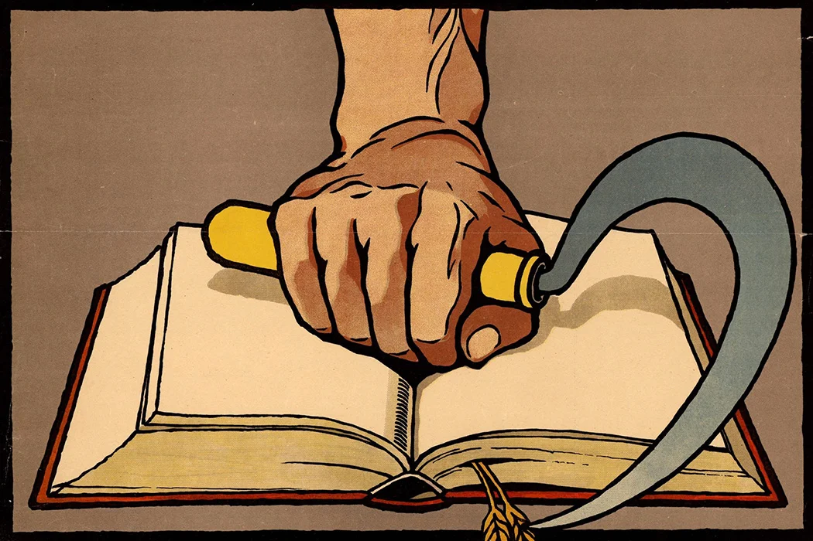
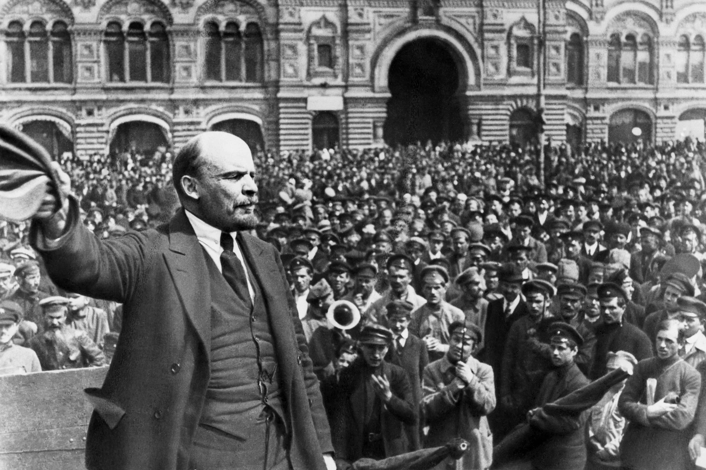
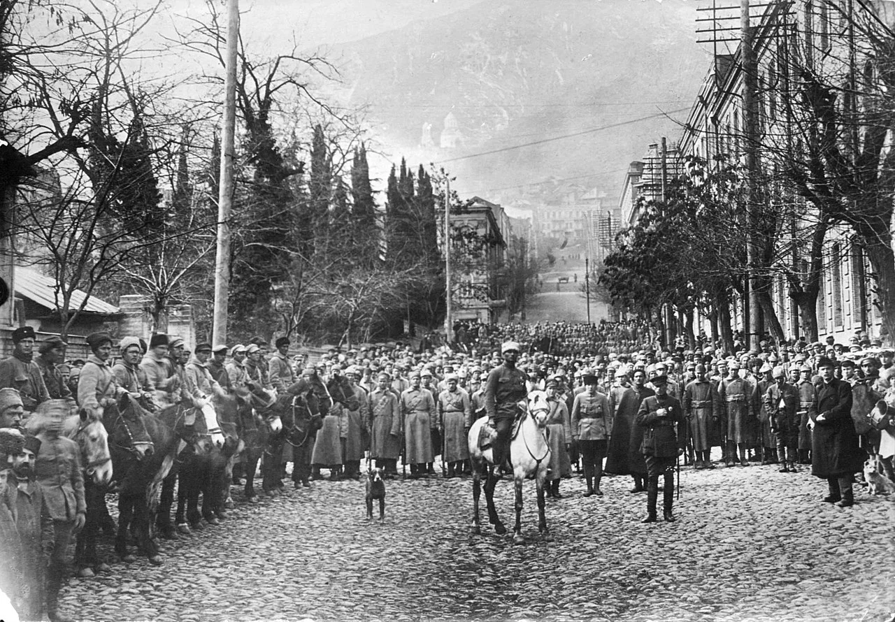

The Birth of the Soviet Union and the Death of the Russion Revolution
The Russian Revolution promised—and for a time delivered—freedom to the peoples of the Tsarist Empire. That freedom ended with the creation of the USSR.

